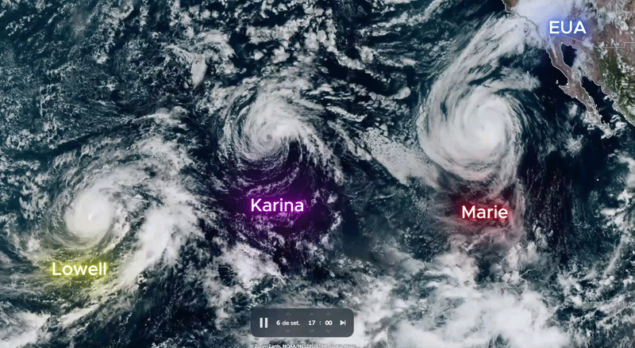

Caso de Estudo: Três Ciclones Simultâneos no Pacífico
Como vimos na página sobre a formação do El Niño e La Niña, a intensificação de anomalias térmicas globais está diretamente ligada à emissão contínua de gases do efeito estufa (como o CO₂). Essa retenção de calor altera a temperatura dos oceanos e cria o cenário ideal para o surgimento de tempestades extremas em sequência.
Aquecimento do Oceano e a Mudança nos Ventos Alísios
Os ventos alísios sopram constantemente na região equatorial e ajudam a distribuir o calor nos oceanos. No entanto, com a elevação da temperatura da água devido às emissões de CO₂, a pressão atmosférica na superfície sofre alterações significativas.
Esse aquecimento reduz o cisalhamento do vento (mudar brusco de velocidade/direção em altitude). Sem ventos fortes na alta atmosfera para "cortar" as tempestades em formação, o ar quente e úmido sobe com facilidade, permitindo que múltiplos furacões se organizem simultaneamente.
Cronologia e Animação de Formação
Abaixo, acompanhe a evolução em imagens de satélite gravadas via plataforma Zoom Earth, demonstrando o surgimento e o movimento de rotação dos ciclones no Pacífico:

Imagens de satélite: rotação simultânea das tempestades no Oceano Pacífico.
Ficha Técnica das Tempestades Analisadas
Conforme dados da plataforma do satélite NOAA-21 (tecnologia VIIRS) divulgados pela CNN, as temperaturas de brilho registradas na imagem de satélite evidenciam a estrutura dos três furacões no Pacífico (identificados da esquerda para a direita):
- Furacão Lowell: Projeção de alta intensidade, com potencial de atingir a Categoria 3 ou 4 na escala Saffir-Simpson.
- Furacão Karina: Sistema de grande porte com estimativa de sustentação em Categoria 3 ou 4.
- Furacão Marie: Completando o trio no Pacífico, com projeção de intensidade aproximando-se da Categoria 3.
O Futuro dos Furacões: Trajetória e Dissipação
Eles podem sair do oceano e ir para a terra?
Sim. Quando a rota do furacão o guia até o continente ou ilhas, ocorre o fenômeno de Landfall (aterramento). Nesses locais, o impacto é devastador, gerando ressacas marítimas, vendavais e inundações.
Quando e por que eles se desfazem?
Como o furacão depende da evaporação da água quente (acima de 26,5 °C) para se alimentar, ele se dissipa por três motivos principais:
- Entrada em Solo Firme: Perde a fonte de umidade/calor do mar e sofre o atrito contra relevos, árvores e construções.
- Encontro com Águas Frias: Ao avançar para latitudes mais altas, a água fria corta o fornecimento de energia.
- Aumento do Cisalhamento: Ventos de altitude mais fortes "quebram" a coluna vertical da tempestade.